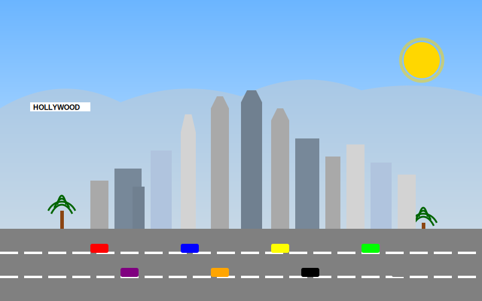

Introduction: Asking AI for help with expressing my feelings towards my hometown of LA

Los Angeles’s skyline, as produced by Claude!
I was born and raised in Los Angeles and am very proud of the city I come from. In an attempt to product a blog post all about my love, appreciation, and knowledge for LA, I turned to an LLM (Claude) to produce the blog as if it were me. Since LLM’s don’t typically automatically generate content in the first person, I gave it a blurb to start from.
Starting text I provided the LLM with: As a native Angeleno, I feel as though I have extensive knowledge of the ins and outs of the city of Angels. I have a deep appreciation for the multicultural landscape and diverse genetic makeup of the city.
The post produced by Claude
As a native Angeleno, I feel as though I have extensive knowledge of the ins and outs of the City of Angels. I have a deep appreciation for the multicultural landscape and diverse genetic makeup of the city. Growing up here, it’s impossible not to recognize how the vibrant mix of cultures, backgrounds, and histories has shaped Los Angeles into the dynamic, ever-evolving metropolis it is today. It’s in our food, our neighborhoods, our music, and even the way we interact with each other. There’s truly no place like LA.
From the iconic taco trucks that line the streets of Boyle Heights to the Korean BBQ joints in K-Town, food is an undeniable reflection of LA’s cultural diversity. Growing up, I had the privilege of tasting my way through various cuisines, from the rich flavors of Mexican and Salvadoran dishes to the savory tastes of Persian kebabs and Filipino adobo. It’s one of the things I love most about LA—there’s no shortage of options to satisfy any craving. And let’s not forget our coffee culture, with local spots offering everything from artisan brews to boba tea.
But LA’s diversity isn’t just seen through its food—our neighborhoods tell the story too. Take a drive down Sunset Boulevard and you’ll pass through so many unique enclaves: the historic architecture of Downtown LA, the hipster vibes of Silver Lake, the glitz of Beverly Hills, the beachy vibes of Venice, and the relaxed, family-friendly energy of neighborhoods like Pasadena. Each area has its own distinct personality, yet they all coexist within this sprawling city. We have a way of blending the old with the new, the traditional with the innovative. That’s what makes LA so special—it’s a city that feels like it’s constantly reinventing itself while keeping a strong connection to its roots.
And don’t even get me started on the people. As an Angeleno, you can meet anyone from a budding artist working out of their garage in the Arts District to a Hollywood executive running into you at the farmer’s market. It’s a city where you can truly carve out your own path, but you’re also constantly surrounded by people who come from different walks of life. LA fosters a sense of individuality while still celebrating community, and that balance is what keeps the city buzzing with energy.
But let’s be real for a second—living in LA isn’t always sunshine and palm trees. We’ve got traffic that can make even the most patient person want to pull their hair out. The cost of living is high, and the hustle is constant. But that’s part of what makes this city unique. Despite the challenges, Angelenos have a resilience that’s hard to match. We keep pushing forward, we find new ways to make it work, and we’re always looking for the next big opportunity.
In the end, what makes LA home for me is the sense of possibility that’s everywhere. It’s a city where dreams feel achievable, whether you’re chasing a career in the entertainment industry or trying to make your mark as an entrepreneur. We might not have seasons the way other cities do, but we have something even better—the endless potential to reinvent ourselves, to grow, and to make our mark in a city that embraces the unusual, the creative, and the diverse.
There’s something undeniably special about being an Angeleno, and it’s something I’ll always carry with me, no matter where life takes me. From the beach to the mountains, the arts to the food scene, LA will always be the place where I truly feel at home.
A vamped up version of the skyline, produced by Claude
My reflections
I was rather impressed with what the LLM produced. I gave it practically nothing and it was able to hone in on different communities, neighborhoods, and cultures in Los Angeles. Something I found interesting was the way it created a sort of cross between a tourist book and a Wikipedia post. There was a mix of the LLM’s personal LA favorites, elaborate details on the various districts throughout the city, and niche personal reflections on the city they seem to love oh so much! I was however very underwhelmed with the pictures it produced for me. The skyline images, both the original and the “beautiful” images were mediocre and lacking the amazing details I have seen other LLMs incorporate in their image generation processes. I now am inclined to see what the LLM would offer if I treated it as a travel guide for an upcoming trip to LA…